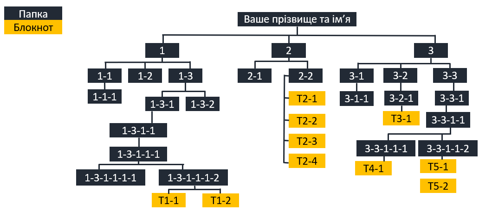

HUB 56 · 5 клас · Урок №9
Практична робота №1
Операції над файлами, папками та ярликами.
Увага! Працюйте лише у папці, яку вказав учитель або вчителька. Не змінюйте системні та чужі файли.
ЕТАП 1
Підготуйте робоче місце
Завантажте архів, розпакуйте його у папку, яку вказав учитель або вчителька, та відкрийте Провідник.
Завантажити матеріали практичної роботиZIP · близько 8 МБ
ЕТАП 2 · ЗАВДАННЯ 1
Створіть структуру папок
- Створіть папку Мої фото.
- У ній створіть папки Мандрівка до лісу та Мандрівка до Києва.
- Скопіюйте до «Мої фото» папку Малюнки із навчальних матеріалів.
- Перейменуйте скопійовану папку на Малюнки квітів.
ЕТАП 3 · ФАЙЛИ
Створіть, перемістіть і перейменуйте файли
- У папці «Малюнки квітів» створіть точкові малюнки Мальви.bmp та Барвінок.bmp.
- Перемістіть із папки «Фото подорожей» до «Мандрівка до Києва» файли Київ1.jpg і Київ2.jpg.
- Перейменуйте їх на Андріївська церква.jpg та Хрещатик.jpg.
- Додатково створіть у папці «Мої фото» ярлик файла «Андріївська церква.jpg».
Перевірте розширення. Під час перейменування змінюйте назву, але зберігайте частину після крапки: .bmp або .jpg.
ЕТАП 4 · КОШИК
Видаліть і відновіть об’єкти
- Із папки «Малюнки квітів» видаліть папку Репродукції та файл квіти.bmp.
- Відкрийте Кошик і знайдіть щойно видалені об’єкти.
- За вказівкою вчителя або вчительки відновіть їх.
ЕТАП 5 · ЗАВДАННЯ 2
Створіть організацію об’єктів за схемою
Створіть головну папку зі своїм прізвищем та ім’ям. Темні прямокутники на схемі позначають папки, жовті — текстові документи Блокнота.

Завершення роботи
Виконано 0 із 13 контрольних кроків.
Продемонструйте результат учителю або вчительці. Для домашнього завдання підготуйте скріншоти готової структури.